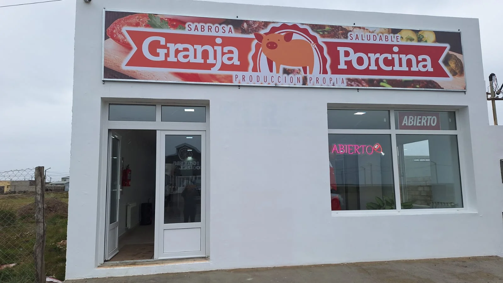

Dónde encontrarnos
Nuestros locales
en Río
Grande.
Dos puntos de venta en la ciudad. Mismo producto, misma calidad, siempre fresco.

Local 1
Sucursal Pellegrini
Carlos Pellegrini 312
Río Grande, Tierra del Fuego
Río Grande, Tierra del Fuego
Lun – Sáb 10:00 – 13:00 /
15:30 – 20:30

Local 2
Sucursal Alambrador
El Alambrador 50
Río Grande, Tierra del Fuego
Río Grande, Tierra del Fuego
Lun – Sáb 10:00 – 13:00 /
16:00 – 21:00